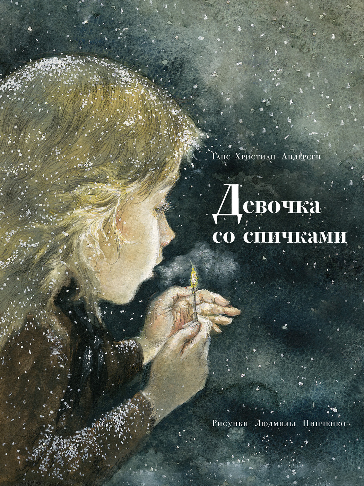
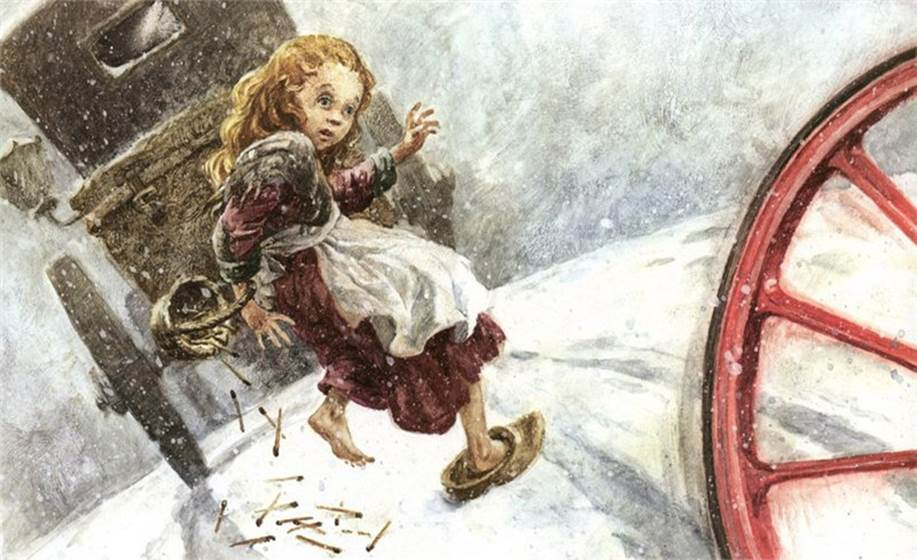
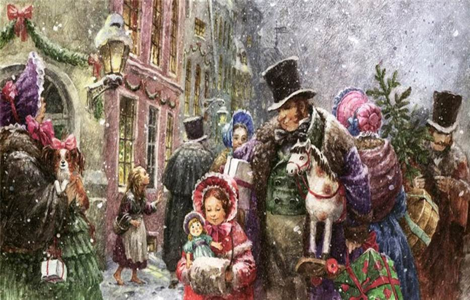
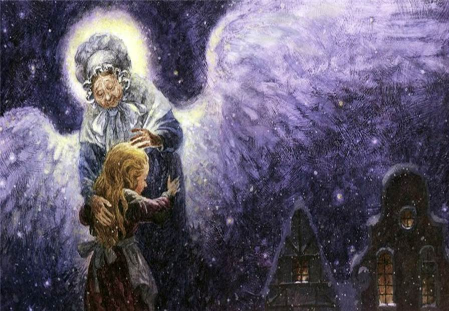
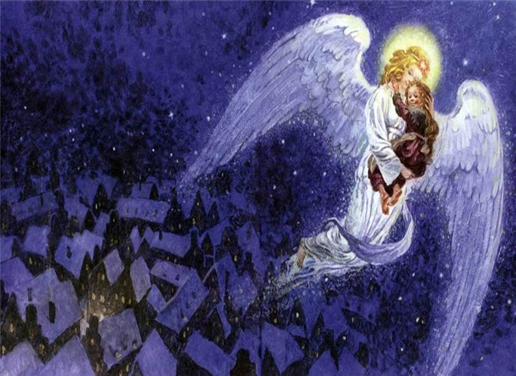
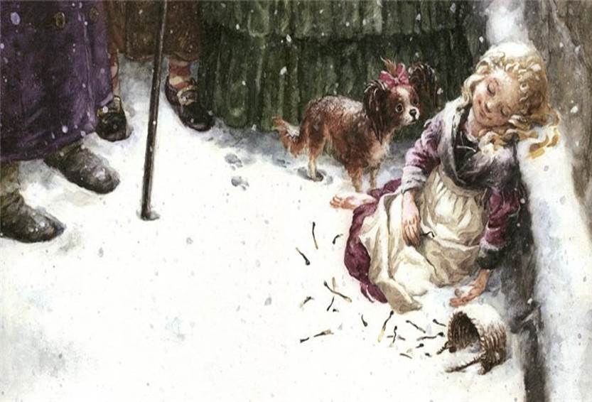

Как холодно было в этот вечер! Шел снег, и сумерки сгущались. А вечер был последний в году - канун Нового года. В эту холодную и темную пору по улицам брела маленькая нищая девочка с непокрытой головой и босая. Правда, из дому она вышла обутая, но много ли было проку в огромных старых туфлях? Туфли эти прежде носила ее мать - вот какие они были большие,- и девочка потеряла их сегодня, когда бросилась бежать через дорогу, испугавшись двух карет, которые мчались во весь опор. Одной туфли она так и не нашла, другую утащил какой-то мальчишка, заявив, что из нее выйдет отличная люлька для его будущих ребят.
Вот девочка и брела теперь босиком, и ножки ее покраснели и посинели от холода. В кармане ее старенького передника лежало несколько пачек серных спичек, и одну пачку она держала в руке. За весь этот день она не продала ни одной спички, и ей не подали ни гроша. Она брела голодная и продрогшая и так измучилась, бедняжка!
Снежинки садились на ее длинные белокурые локоны, красиво рассыпавшиеся по плечам, но она, право же, и не подозревала о том, что они красивы. Изо всех окон лился свет, на улице вкусно пахло жареным гусем - ведь был канун Нового года. Вот о чем она думала!
Наконец девочка нашла уголок за выступом дома. Тут она села и съежилась, поджав под себя ножки. Но ей стало еще холоднее, а вернуться домой она не смела: ей ведь не удалось продать ни одной спички, она не выручила ни гроша, а она знала, что за это отец прибьет ее; к тому же, думала она, дома тоже холодно; они живут на чердаке, где гуляет ветер, хотя самые большие щели в стенах и заткнуты соломой и тряпками.

Удивительная свечка! Девочке почудилось, будто она сидит перед большой железной печью с блестящими медными шариками и заслонками.
Как славно пылает в ней огонь, каким теплом от него веет! Но что это? Девочка протянула ноги к огню, чтобы погреть их, - и вдруг...
пламя погасло, печка исчезла, а в руке у девочки осталась обгорелая спичка.
Она чиркнула еще одной спичкой, спичка загорелась, засветилась, и когда ее отблеск упал на стену, стена стала прозрачной, как кисея.
Девочка увидела перед собой комнату, а в пей стол, покрытый белоснежной скатертью и уставленный дорогим фарфором; на столе, распространяя чудесный аромат,
стояло блюдо с жареным гусем, начиненным черносливом и яблоками! И всего чудеснее было то, что гусь вдруг спрыгнул со стола и, как был, с вилкой и ножом в спине,
вперевалку заковылял по полу. Он шел прямо к бедной девочке, но... спичка погасла, и перед бедняжкой снова встала непроницаемая, холодная, сырая стена.
Девочка зажгла еще одну спичку. Теперь она сидела перед роскошной рождественской елкой. Эта елка была гораздо выше и наряднее той,
которую девочка увидела в сочельник, подойдя к дому одного богатого купца и заглянув в окно. Тысячи свечей горели на ее зеленых ветках,
а разноцветные картинки, какими украшают витрины магазинов, смотрели на девочку. Малютка протянула к ним руки, но... спичка погасла.
Огоньки стали уходить все выше и выше и вскоре превратились в ясные звездочки. Одна из них покатилась по небу, оставив за собой длинный огненный след.
"Кто-то умер", - подумала девочка, потому что ее недавно умершая старая бабушка, которая одна во всем мире любила ее, не раз говорила ей: "Когда падет звездочка, чья-то душа отлетает к богу".

Девочка снова чиркнула о стену спичкой и, когда все вокруг осветилось, увидела в этом сиянии свою старенькую бабушку,
такую тихую и просветленную, такую добрую и ласковую.
- Бабушка, - воскликнула девочка, - возьми, возьми меня к себе! Я знаю, что ты уйдешь, когда погаснет спичка, исчезнешь, как теплая печка,
как вкусный жареный гусь и чудесная большая елка!

И она торопливо чиркнула всеми спичками, оставшимися в пачке, - вот как ей хотелось удержать бабушку! И спички вспыхнули так ослепительно,
что стало светлее, чем днем. Бабушка при жизни никогда не была такой красивой, такой величавой. Она взяла девочку на руки, и, озаренные светом и радостью,
обе они вознеслись высоко-высоко - туда, где нет ни голода, ни холода, ни страха, они вознеслись к богу.
Морозным утром за выступом дома нашли девочку: на щечках ее играл румянец, на губах - улыбка, но она была мертва;
она замерзла в последний вечер старого года. Новогоднее солнце осветило мертвое тельце девочки со спичками; она сожгла почти целую пачку.
- Девочка хотела погреться, - говорили люди. И никто не знал, какие чудеса она видела, среди какой красоты они вместе с бабушкой встретили Новогоднее Счастье.
